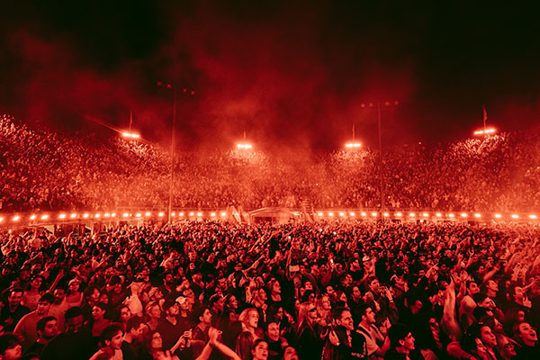
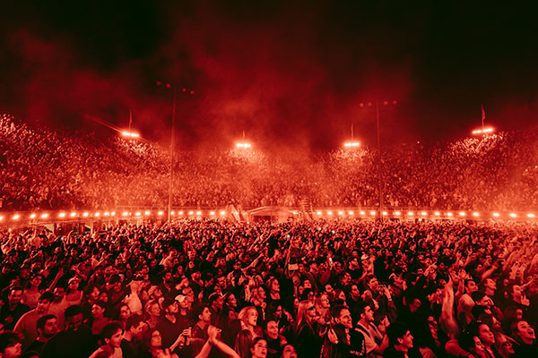
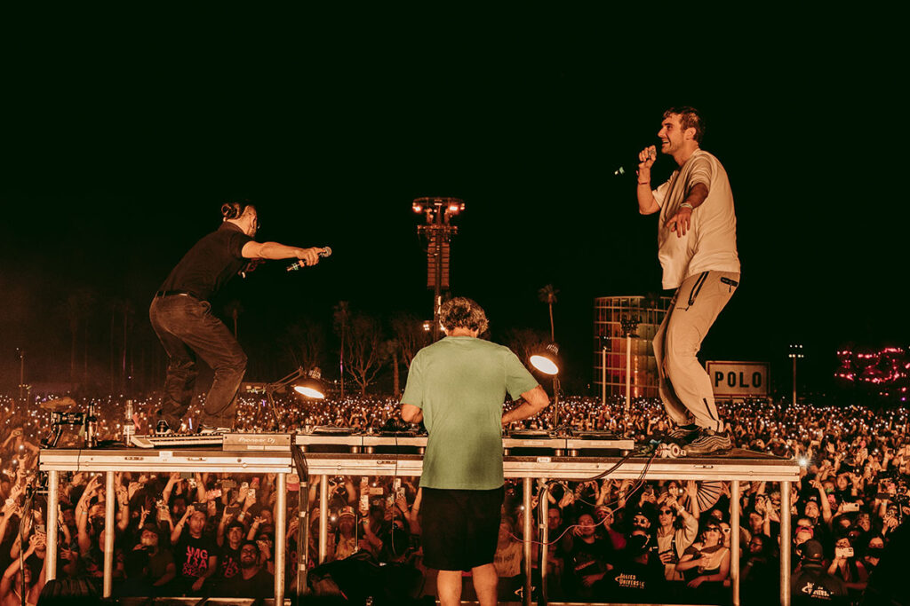
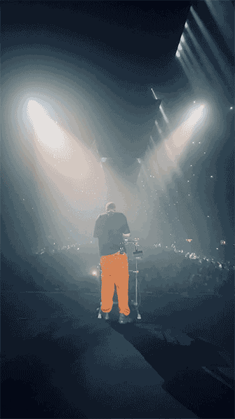
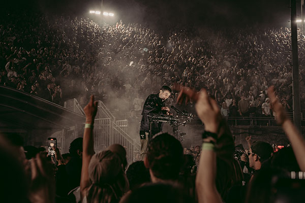
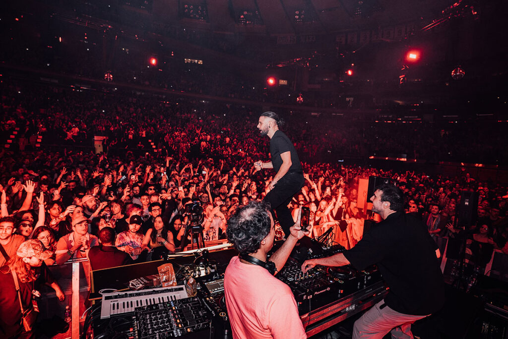
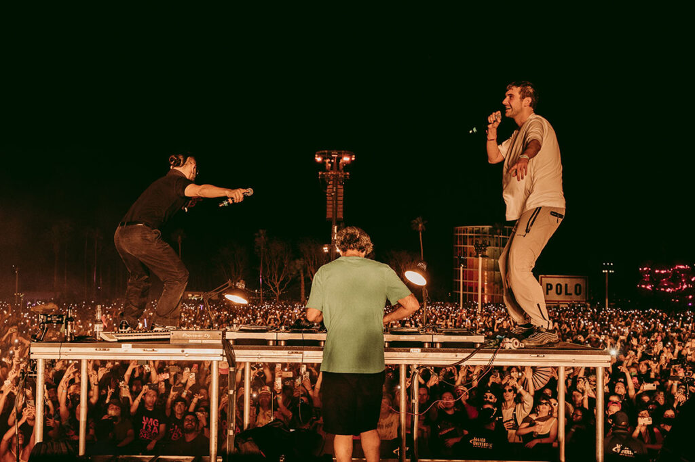
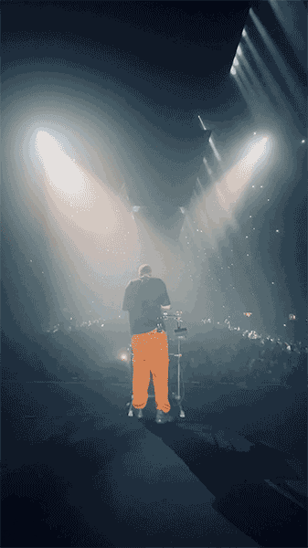
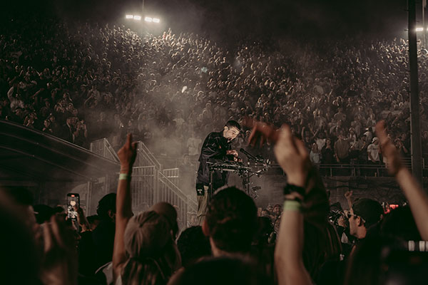
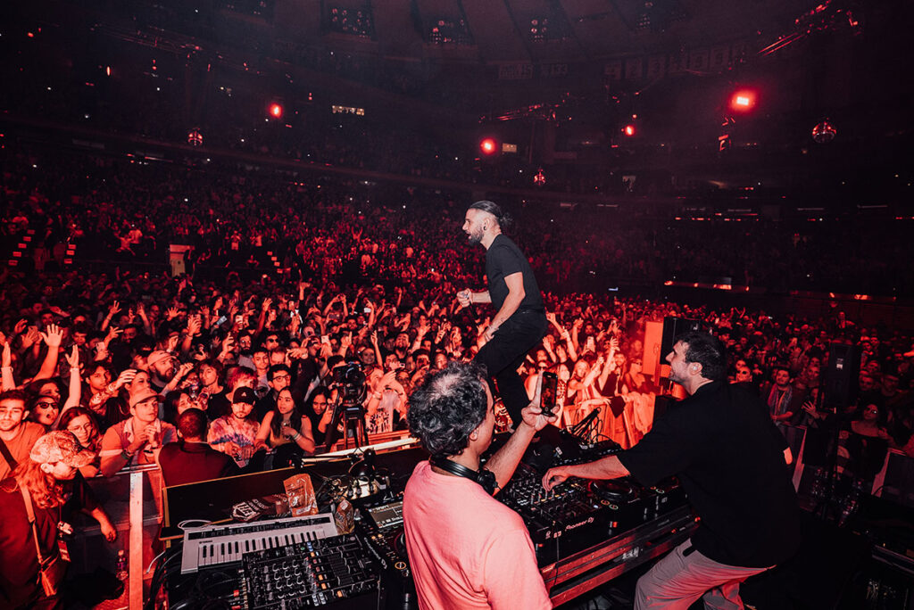

Who is Fred Again?
Fred again.. is een Britse muziekproducent en artiest. Zijn echte naam is Fred Gibson. Hij staat bekend om zijn veelzijdigheid en creativiteit binnen de muziekwereld. Fred again.. heeft bijgedragen aan verschillende muziekgenres, waaronder elektronische muziek, house en pop.
 

 






